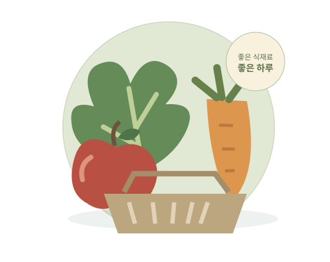

THE ARIRANG · ONLINE GROCERY
아리랑마켓오늘의 식탁을
기분 좋게 채우다.
신선한 식재료부터 간편한 한 끼까지.
더 아리랑에서 만나는 온라인 식품 장보기.

SHOP BY CATEGORY
필요한 식품부터 둘러보세요.
A SIMPLE WAY TO SHOP
카테고리에서 장바구니까지.
지역 선택 → 업체별 장보기 → 주문 접수 → 상품 준비 → 라이더 픽업·배송까지 한곳에서 확인하세요.
- 01식품 선택카테고리와 검색으로 탐색
- 02상세 확인상품 구성·보관 안내 확인
- 03주문·배송 확인판매자 접수와 배송 단계 확인